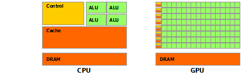
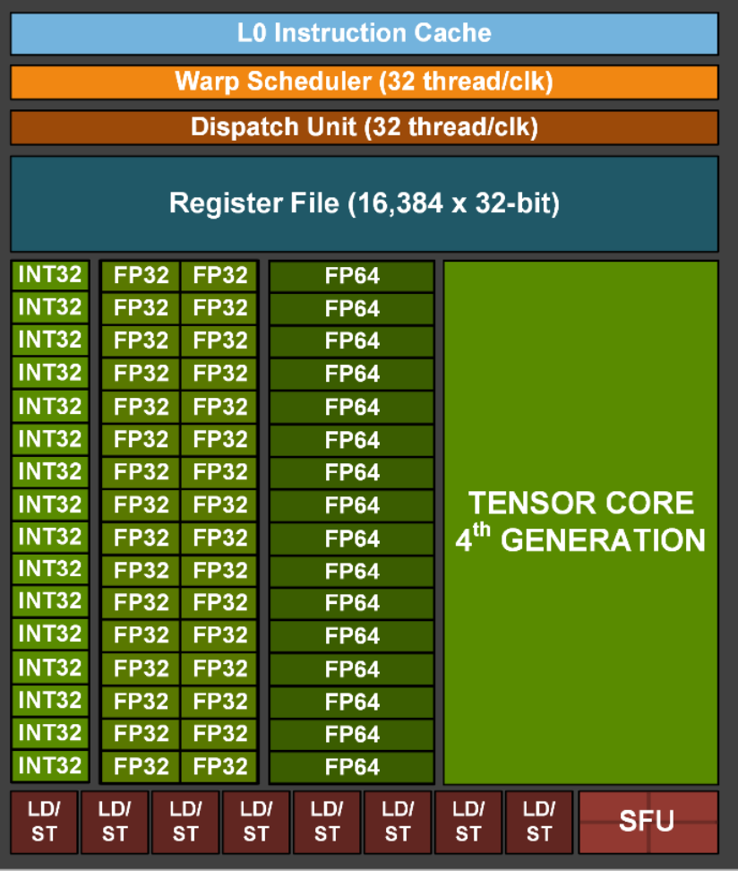
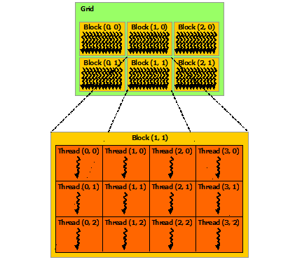
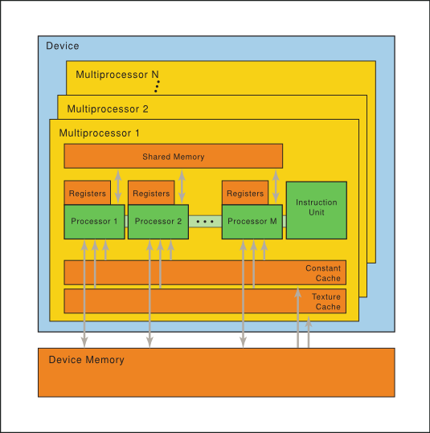
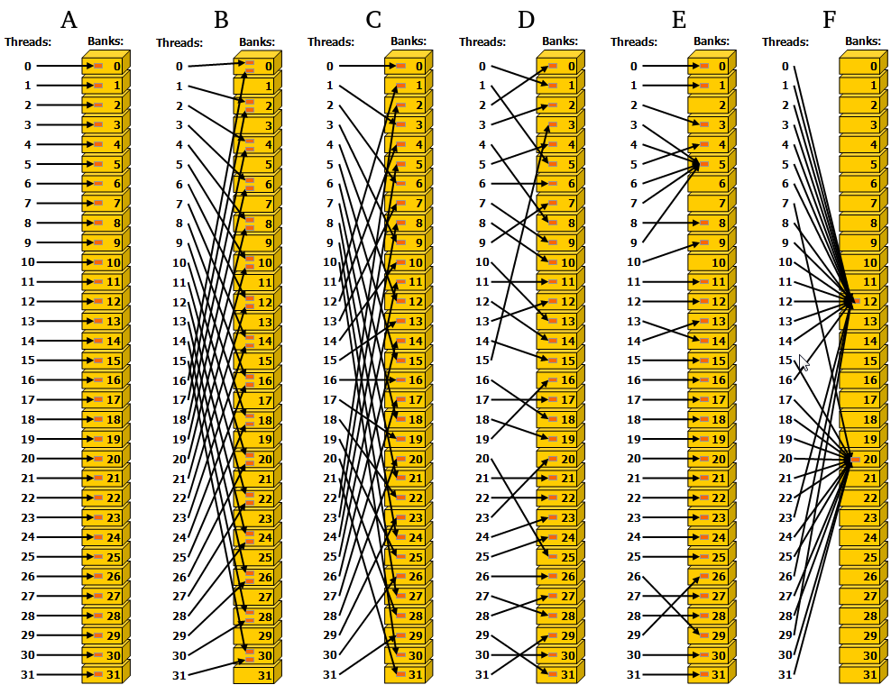

20261105 - Intro to GPUs¶
What are GPUS?¶
GPUs are simply a specific choice on how to allocate die area and the consequences of that
The recipe:
Lots of raw math compute (algebra)
Little bit of cache
A dash of execution control logic
Notably, no “normal” CPU logic
No bit manipulation routines (shift, xor, etc.)
No dedicated character/string handling
Only floating point and integer math

Nvidia.com: real-estate difference
This means
No branch prediction
No cache tiers
you (usually) pay maximum penalty for going to global memory
(Most) GPUs use SIMT model of compute: single instruction, multiple thread
Similar, but slightly different than SIMD
SIMD requires that all “lanes” be executed at the same time, doing the exact same thing, vector registers
SIMT relaxes the rigid constraints of SIMD
Super-scalar, but different¶
(my preferred way of thinking about it, certainly not perfect)
Remember super-scalar architecture for CPUs?
Multiple execution units
Dispatch launches micro-ops onto each execution unit as made available
It’s bascially that, but slightly different
There are a bunch of execution units to a “core”
Each execution units (basically) runs it’s own operation, on it’s own data
Execution units are synced to each other
Primary differences
Each execution unit isn’t as independent
Each execution unit has to do (basically) the same operation at the same time; each unit is in “lock step” with the others
Execution units can “skip” an execution
Dispatching instuctions to each execution unit happens simultaneously
The intention is that all the execution units participate in the same computation

From super-scalar perspective, each row of the “INT32, FP32, FP64” is a single execution unit, capable of running one of those operations
Kinda, the side-by-side “FP32” chunks actually run independently
Special functions unit
Responsible for “special” math functions
\(\sin, \cos, \exp, \log\), etc.
H100 only has 4 units per subpartition
If you have 32 values (warp size) that you need to run a special function on, it takes 8 cycles
Execution hierarchy:¶
CUDA |
AMD/Intel/SYCL |
Description |
User Controlled |
|---|---|---|---|
Thread |
Work-item |
Single stream of execution and data |
Yes |
Warp |
Wavefront/sub-group |
Collection of threads (generally 32) |
No |
Thread-block |
Work-group |
Collection of warps (executed on single compute unit) |
Yes |
Grid |
ND-Range |
Collection of thread-blocks |
Yes |
CUDA Kernel syntax example¶
// Add two matrices A and B of size NxN and stores the result into matrix C:
__global__ void MatAdd(float A[N][N], float B[N][N], float C[N][N]) {
int i = blockIdx.x * blockDim.x + threadIdx.x;
int j = blockIdx.y * blockDim.y + threadIdx.y;
if (i < N && j < N)
C[i][j] = A[i][j] + B[i][j];
}
int main() {
dim3 threadsPerBlock(16, 16);
dim3 numBlocks(N / threadsPerBlock.x, N / threadsPerBlock.y);
MatAdd<<<numBlocks, threadsPerBlock>>>(A, B, C);
}
Similar OpenMP SPMD threadID-esque indexing
With the addition of block indexing
CUDA-specific additions:
Kernels are defined with a
__global__specifier (when called by the host).<<<numBlocks, threadsPerBlock>>>gives the execution configuration.Ways for threads to query their location:
threadIdx,blockIdx.
Execution hierarchy details:¶
Threads each have their own register allocation. They are always executed in “SIMT” warps of up to 32 (could change, but hasn’t yet). This means:
any divergence of instructions between threads within a warp causes some of the threads to no-op (not entirely true anymore, but basically true);

product(threadsPerBlock)should be a multiple of 32 (maximum 1024) where possible.Similar to wanting SIMD for loops to be multiple of the vector register width
Note: Warps are a hardware execution concept only.
Warps are the “unit” that the hardware uses to dispatch work
Somewhat akin to a CPU “thread”, from an OS process scheduling perspective
When programming a GPU kernel, you index the work with thread-blocks and thread IDs, but not warps.
SM can switch between differen warps depending on resource blocking
If warp is waiting on data to be transfered, it can switch to other warp
This is literally simultaneous multithreading (SMT) on the CPU
Warp “residence” is the same as OS assigning multiple threads to the same CPU core
We switch between warps/CPU threads based on which one is waiting for external resources (e.g. memory)
Blocks each have their own shared memory allocation. All threads in a block are resident on the same processing core. Thread layout can be up to three dimensions.
can perform a lightweight synchronization within a block;
co-resident blocks can be helpful at masking latency, but this is limited by block memory and register use.
Blocks themselves are layed out on a grid of up to three dimensions (on recent compute capabilities). They must be logically executable in parallel or any serial order.
no synchronization across blocks within a kernel;
embarassingly parallel only, although caches can be reused.

Nvidia.com: 2d grid and threads
Memory¶

Nvidia.com: model of memory connections
Registers
Shared memory
Effectively user-controllable L1 cache
L2 cache
Global memory
By default, host and device are assumed to maintain separate memory:
explicit device allocation and deallocation;
explicit transfer between host and device.
This is done with the global memory.
Each SM has shared memory which tends to be fast
Each thread has “local” memory
That is actually no more local than global memory!
Primarily used for register spilling.
Somewhat equivalent of swap file for CPU RAM, where data can be written to disk if there’s not enough RAM
Similarly, performance tanks if this happens
Can “turn off” threads to increase register-per-thread ratio
Memory transfer example¶
__global__ void VecAdd(float* A, float* B, float* C, int N)
{
int i = blockDim.x * blockIdx.x + threadIdx.x;
if (i < N)
C[i] = A[i] + B[i];
}
int main()
{
int N = ...;
size_t size = N * sizeof(float);
// Allocate input vectors h_A and h_B in host memory
float* h_A = (float*)malloc(size);
float* h_B = (float*)malloc(size);
float* h_C = (float*)malloc(size);
// Initialize input vectors
...
// Allocate vectors in device memory
float* d_A;
cudaMalloc(&d_A, size);
float* d_B;
cudaMalloc(&d_B, size);
float* d_C;
cudaMalloc(&d_C, size);
// Copy vectors from host memory to device memory
cudaMemcpy(d_A, h_A, size, cudaMemcpyHostToDevice);
cudaMemcpy(d_B, h_B, size, cudaMemcpyHostToDevice);
// Invoke kernel
int threadsPerBlock = 256;
int blocksPerGrid = (N + threadsPerBlock - 1) / threadsPerBlock;
VecAdd<<<blocksPerGrid, threadsPerBlock>>>(d_A, d_B, d_C, N);
// Copy result from device memory to host memory
// h_C contains the result in host memory
cudaMemcpy(h_C, d_C, size, cudaMemcpyDeviceToHost);
// Free device memory
cudaFree(d_A);
cudaFree(d_B);
cudaFree(d_C);
// Free host memory
...
}
Optimization Details¶
Often details depend on the particular “compute capability” of the device.
Intrinsic function instructions¶
similar tradeoffs to –ffast-math
Memory¶
Hiding Memory Transfers:¶
Memory transfers between host and device generally have the greatest latency. Modern capabilities can hide data transfer between host and device by giving the device other tasks to work on and having the host use asynchronous versions of the transfer functions.
This is managed through streams on the host, where cuda calls within a stream are guaranteed to execute on the device in order, but those between streams may be out of order or overlap depending on the compute capability.
To minimize waiting with the following code, the compute capability needs to allow concurrent data transfers, concurrent kernel execution, and overlap of data transfer and kernel execution.
for (int i = 0; i < 2; ++i) {
cudaMemcpyAsync(inputDevPtr + i * size, hostPtr + i * size,
size, cudaMemcpyHostToDevice, stream[i]);
MyKernel <<<100, 512, 0, stream[i]>>>
(outputDevPtr + i * size, inputDevPtr + i * size, size);
cudaMemcpyAsync(hostPtr + i * size, outputDevPtr + i * size,
size, cudaMemcpyDeviceToHost, stream[i]);
}
Global memory access size and alignment:¶
Example: an array of this struct would have elements that aren’t aligned if not for the __align__(16):
struct __align__(16) {
float x;
float y;
float z;
};
This usually crops up with 2d arrays, which are more efficient if width-padded to a multiple of the warp size.
Coalescence:¶
Global (and local*) memory requests must be coalesced—falling into the same 128-byte wide+aligned window (for all modern capabilities)—or they will require multiple instructions.
*: the compiler will generally ensure that local memory use is coalesced
Bank Distribution:¶
Similar, but different from global-memory coalescence. Shared memory is divided into banks (typically 32), where each bank can be accessed simultaneously.

Nvidia.com: A) conflict-free, B) conflict depth 2, C) conflict-free, D) conflict-free, E) conflict-free, F) conflict-free
My impression is that most programmers rely on the compiler to sensibly structure bank accesses for temporary variables, but occasionally breaking into the “CUDA assembly” language ``PTX`` will yeild significant performance improvements.
The combination of coalescence and shared banks can cause an interesting interplay for certain problems. Consider:
Mx31 array made of structs of 2 32-bit floats.
Coalescence would suggest padding the array to 32 wide when reading from global memory, but then once it resides in a shared memory with 32-bit strided banks, a warp of threads accessing the first of the pair of floats will cause bank conflicts of depth 2.
Shared memory would be better served by padding the array width to 31.5.
(the better solution might be to pull the struct apart…)
Texture-specific memory features:¶
Optimized for 2d locality; can be faster than non-coalesced global/constant memory requests.
Ability to automatically cast 8/16-bit integers into [0,1] 32-bit floats.
Low-Level Intro to GPUs¶
See ATPESC